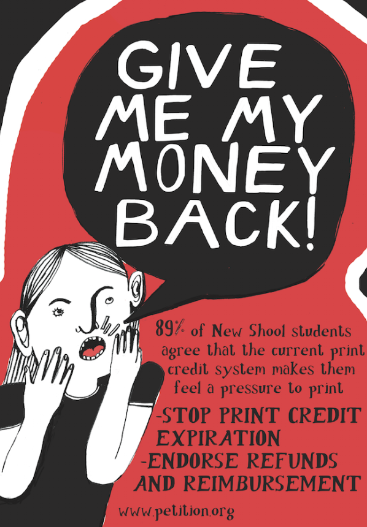
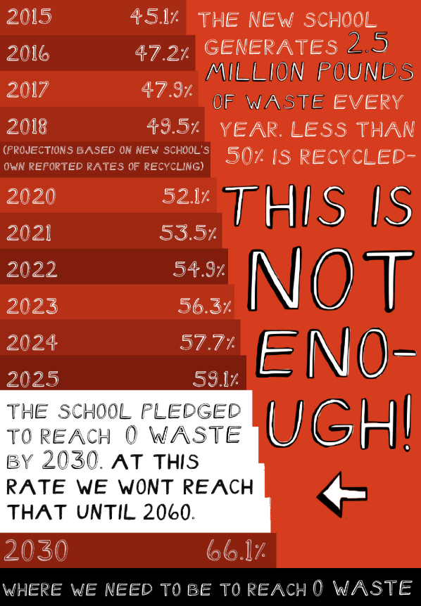
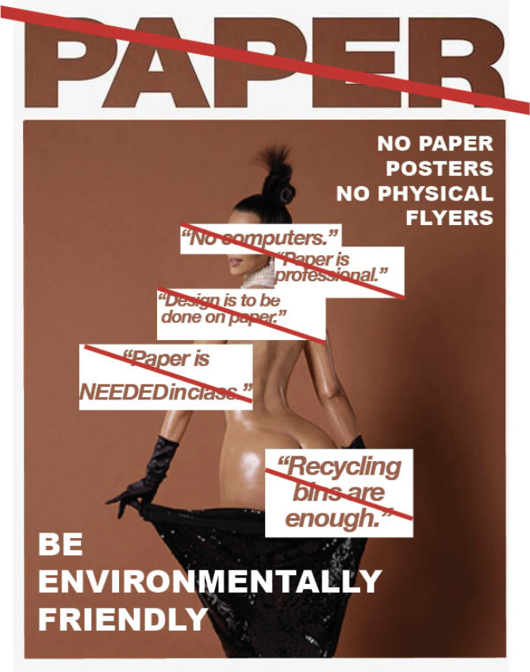

PROPOSAL FOR SUSTAINABLE PAPER WASTE AND USAGE AT PARSONS
Digital Campaign
We, the students of Parsons, propose a systematic shift in the current paradigm the University has set in place that adds to the troublesome paper waste and usage at Parsons. If we are to get 1500 signatures from the faculty and students of parsons we propose five policies to be enacted fully enacted before the New Schools already existing 2030 no waste project. The student body has become aware of their paper waste and usage, that is systematically enforced by the school itself. Through making changes to the way the university and student body interacts with paper, we can make a difference as a community in terms of air quality, greenhouse gases and toxins that all in all contribute to the warming and destruction of our planet. The change starts with us. We hope to be supported by administration to begin setting forth a path to ultimately change our interaction with paper. Recycling is not enough.
I. Reinvent Print Credit System
- Print credits should no longer be represented with a dollar sign.
- Print credits should have no expiration date while students are enrolled, to prevent students are over printing out of the feel they are wasting “money.”
- Print credits should be fully transferable to make other purchases throughout the university, such as the making center store and cafeteria.
- Unused print credits should be eligible for reimbursement to act as a disincentive to printing.
I. Buying and Supporting Ink Cartridges/Ink that are environmentally friendly and reusable
- A remanufactured cartridge
- Supporting Xerox and Soy biodegradable cartridges and sustainable ink
- Most Xerographic machines today use dry toner powder made up of tiny plastic particles,” (Xerox, 1).
- One of the stages of recycling involves removing ink from printed paper, so the deinked paper can be turned into high-quality pulp. (Xerox, 2).
I. Shift Destructive Value Systems that Need to Change
- Computers need to be allowed in class
- Printing projects or reading on paper should be individual student’s choice, professors should not be able to require it.
- Design should not be encouraged to be on paper or have the idea that paper is professional.
- Recycling bins are simply enough.
I. Removing/ banning the spot for paper advertisements in the UC Cafeteria and throughout the building and replacing this with..
- Chalkboards
- Whiteboards
- Electronic Announcements/ Digital Screen
I. Incentivize students Recycling their own paper so that the paper that is used is being recycled right on campus
- Offering Extra Credit
- Printing Credits
- Work Study (payment)
- Gift Cards
- Awards
What do we hope to accomplish?
We hope to become a paper free campus school, making any paper we used properly recycled on campus. Through implementing these changes the amount of paper usage and waste generated from persons should be close to 0. The New School is planning to be 0 waste by 2030, this petition/ proposal would be a big steps in eliminating methane from our overflowing landfills and heating our of earth. Since 53% of parsons waste is still ending up in landfills, this can be a great way to make sure carcinogens from in, and VOC’s (volatile organic compounds) from toner are not leaking into our soil and landfills. We must do our part which starts within our schools to make sure we are producing a health and conducive community. We are in a time of electronics and other non paper forms are readily available to us, we must say goodbye to paper as a school if we want to do our part in helping to tackle parsons paper usage and waste issue.
*** Please sign below if you agree with this mission so a meeting can be setup with administrators in order to enact change that starts within our own university.
POSTERS:


